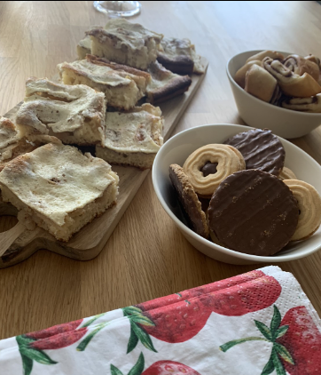
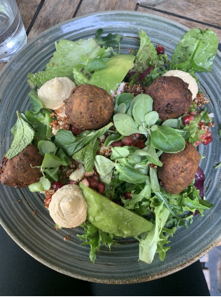

Omenapiirakka
Raaka-aineet ja täyte:
- 100 g voita
- 3/4 dl sokeria (voi laittaa koko desinkin, jos haluaa makeampaa)
- 1 kananmuna
- 2,5 dl vehnäjauhoa
- 1 tl leivinjauhetta Täyte:
- 250 g maitorahkaa (1 prk)
- 0,5 dl sokeria
- 0,5 dl kuohukermaa
- 1 kananmuna
- 1/2 sitruunan mehu
- 1 tl vaniljasokeria
- omenaa
- kanelia
Ohje:
- Ota voi ja munat lämpenemään pari tuntia ennen leipomista. Vaahdota sokeri ja voi, lisää muna ja sitten leivinjauhe- jauhoseos. Levitä voideltuun, korppujauhotettuun piirakkavuokaan
- Levitä omenasosetta ohut kerros pohjalle. Sekoita täyteainekset ja levitä omenasoseen päälle. Kuori omena, poista kara ja leikkaa ohuiksi siivuiksi, levitä siivut täytteen päälle lopuksi vielä ripaus kanelia ja paisto 175 asteessa alatasolla reilu puoli tuntia.

Falafelpyörykät
Raaka-aineet:
- 2 kpl (à 290/175 g) kikherneitä
- 1 kpl sipuli
- 2 kpl valkosipulinkynttä
- 1/2 kpl ruukkua korianteria
- 1 rkl tahinia
- 2 tl juustokuminaa
- (1/4 tl) rouhittua mustapippuria
- 1 tl suolaa
- (3/4 dl) (kokojyvä)vehnäjauhoja
- 1/2 l rypsi- tai auringonkukkaöljyä
Ohje:
- Hienonna sipuli ja valkosipulinkynsi.
- Silppua korianteri. Ohje: Hienonna sipuli ja valkosipulinkynsi. Silppua korianteri. Yhdistä sauva- tai tehosekoittimen kulhossa kikherneet, sipuli, valkosipuli, mausteet ja jauhot.Lisää tahini ja soseuta karkeaksi tahnaksi. Siirrä taikina jääkaappiin tunniksi maustumaan. Pyörittele taikinasta käsin tiiviitä pyöryköitä. Kuumenna öljy 180-asteiseksi. Uppopaista pyörykät kolmessa erässä kullanruskeiksi, noin 5 minuuttia kerrallaan.